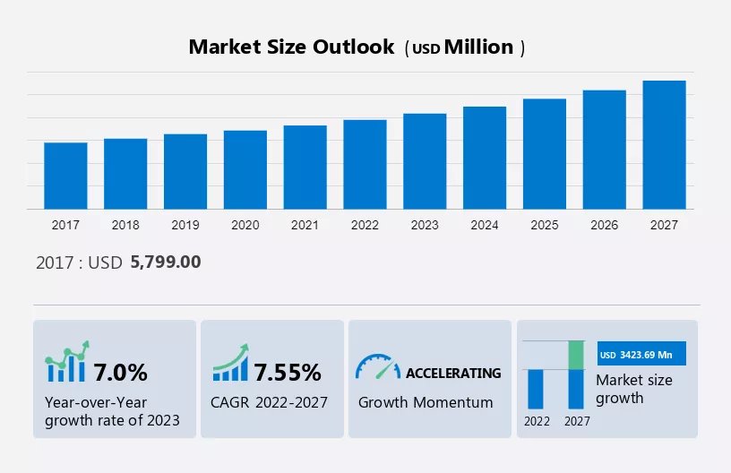
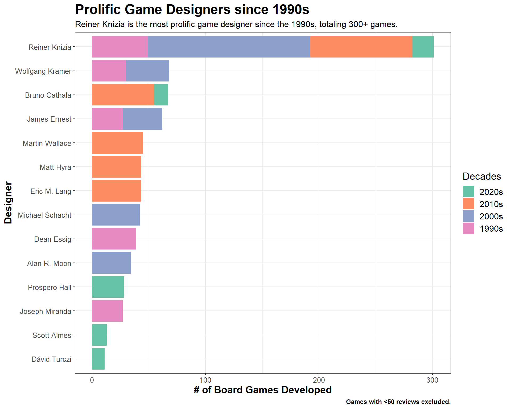
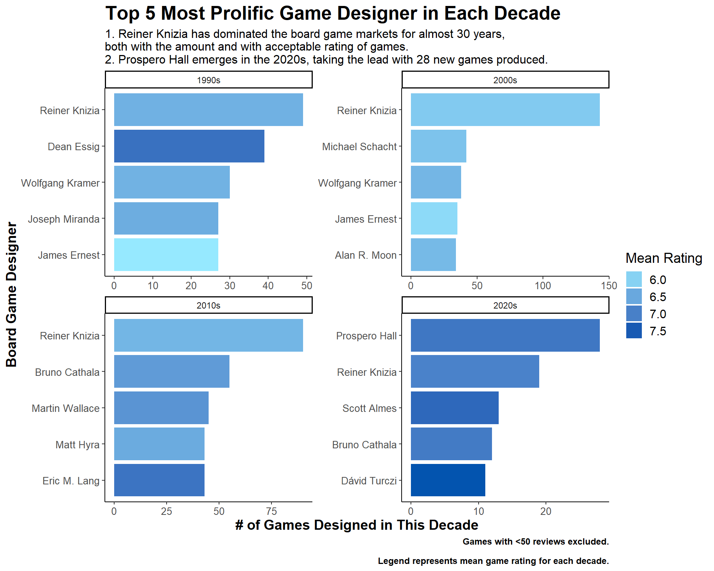
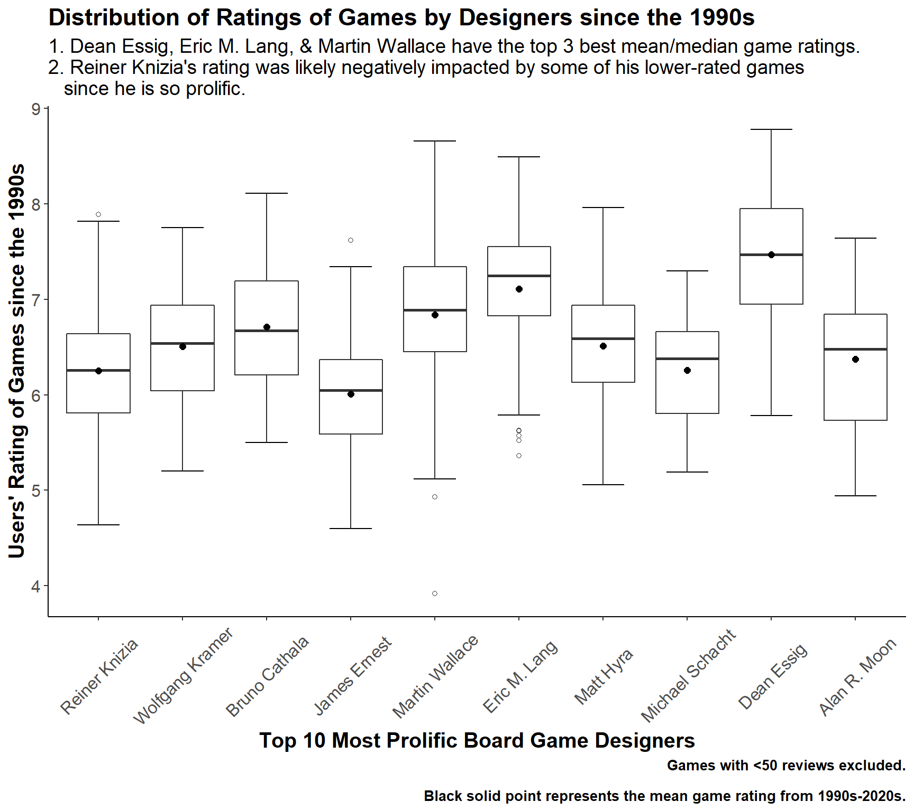
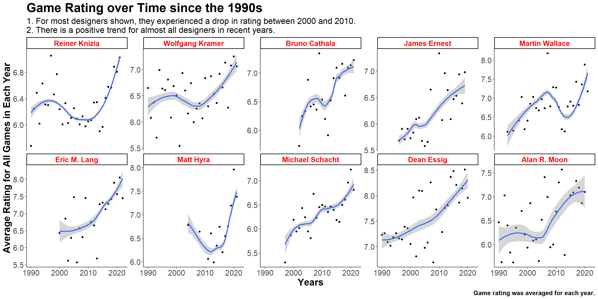
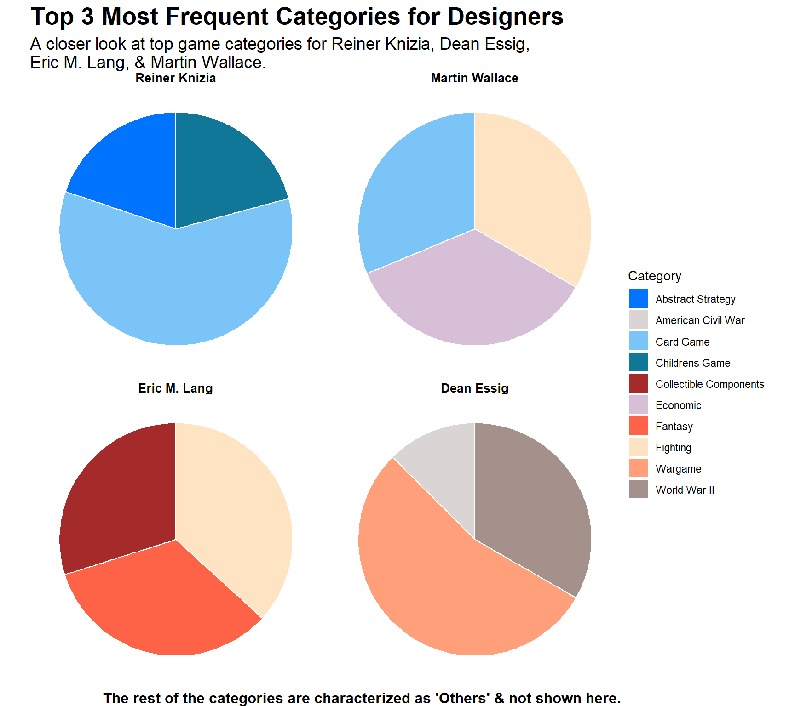
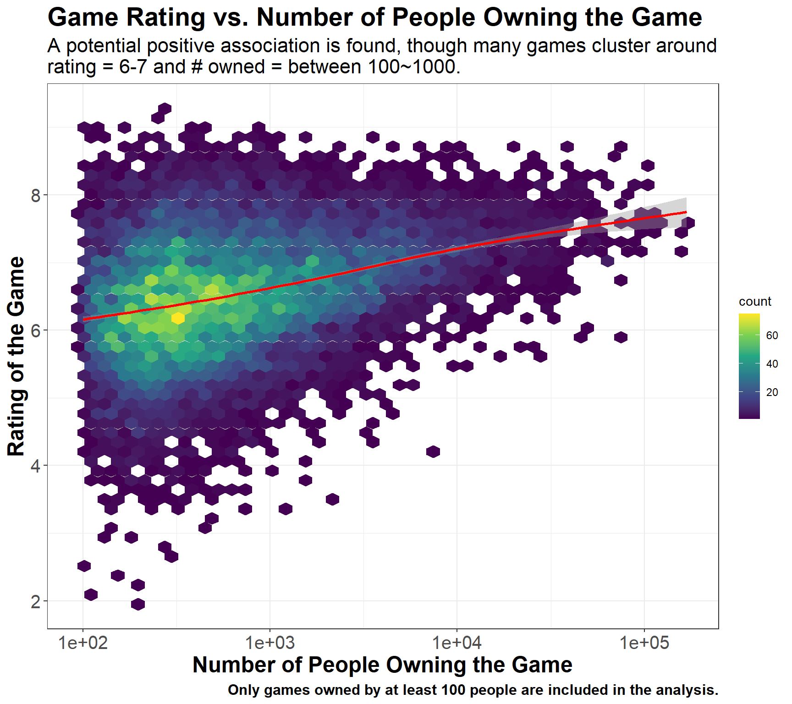
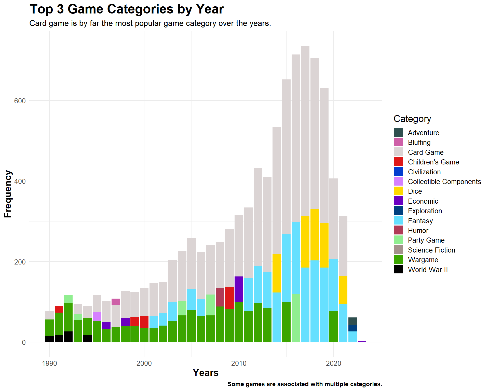
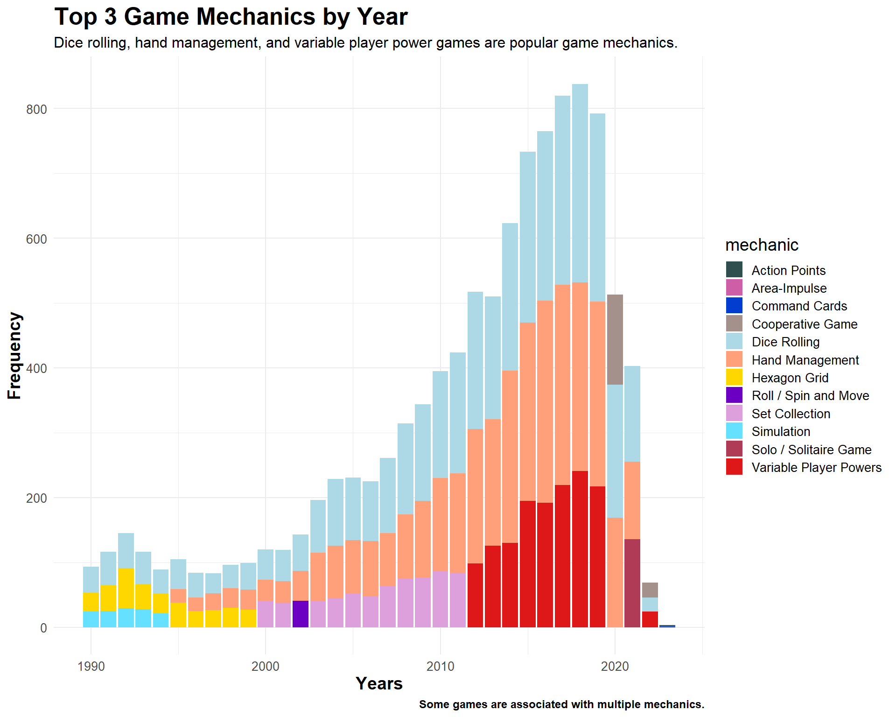

if (!file.exists(here("data", "ratings.RDS", "details.RDS"))) { ratings <- readr::read_csv("https://raw.githubusercontent.com/rfordatascience/tidytuesday/master/data/2022/2022-01-25/ratings.csv") details <- readr::read_csv("https://raw.githubusercontent.com/rfordatascience/tidytuesday/master/data/2022/2022-01-25/details.csv")# save the files to RDS objectssaveRDS(ratings, file =here("data", "ratings.RDS"))saveRDS(details, file =here("data", "details.RDS"))}ratings =readRDS(here("data", "ratings.RDS"))details =readRDS(here("data", "details.RDS"))
Background
The board game market size has been growing and projected to increase continuously as demonstrated on the figure below1, thereby offering an opportunity for making interesting queries.

Fig 1: Board game market growth projection
Project Aims
In this example analysis, I am investigating patterns within the board game dataset, which contains various details on board game user ratings, designers, published year, number of people owning the game, etc. I focused on games developed since the 1990s. Specifically, I seek to answer the following questions:
Who are some of the best board game designers since the 1990s?
Who are very prolific?
When are they active?
Do they have good ratings? Are ratings consistent over time?
What game categories are these prolific designers associated with?
What games are the most owned since the 1990s?
What are the top board game categories since the 1990s?
Is there any trends?
What are the top board game mechanics over the years?
Is there any trends?
Intended Audience
This analysis is intended for the general public, as well as those who are interested in board games.
There are two datasets, one containing general info about game name, id, and rating while the other including more comprehensive details on board game designer, artist, description, category, mechanic, published year, rating, etc. Click here for the data dictionary.
Analysis
Board Game Designer Analysis
In this section, I conducted analysis on and highlighted some of the most brilliant board game designers since the 1990s.
Analysis Background
The analysis excluded games published before 1990 and those with fewer than 50 user ratings. Games with unknown or uncredited designers were also removed from the analysis.
To identify those who are one of the best designers, let’s first explore the number of games they developed in each decade since the 1990.
Show Code
x =ggplot(games_designer %>% dplyr::mutate(decades=factor(decades, levels=rev(unique(decades)))), aes(x=fct_reorder(designer, total_count), y=count, fill=decades)) +geom_bar(stat="identity", position="stack") +coord_flip() +labs(title ="Prolific Game Designers since 1990s",x ="Designer",y ="# of Board Games Developed",subtitle ="Reiner Knizia is the most prolific game designer since the 1990s, totaling 300+ games.",caption ="Games with <50 reviews excluded." ) +theme_bw() +theme(legend.text =element_text(size=12),legend.title =element_text(size=14),plot.title =element_text(size=19, face="bold"),plot.subtitle =element_text(size=12),plot.caption =element_text(size=9, face="bold"),axis.title =element_text(size=14, face="bold"),axis.text =element_text(size=10)) +guides(fill=guide_legend(title="Decades")) +scale_fill_brewer(palette="Set2")x

Fig 2. Prolific game designers by the number of games designed since the 1990.
Clearly, we see that Reiner Knizia absolutely dominated in quantity of games developed, with his peak active years in the 2000s and 2010s. Some other creative game designers who designed many games are (1) Wolfgang Kramer, who were mostly active in the 1990s and 2000s; (2) Martin Wallace, Matt Hyra, Eric M. Lang who became more prolific in the 2010s; and (3) Prospero Hall who emerged in the 2020s.
Tip
The lower number of games developed in the 2020s are partially due to a lack of data collected in recent years.
Next, I take a closer look at both the amount of games and rating stratified by each decade. The rating are depicted by the color gradient while the bars represent the number of games developed.
We see some aforementioned familiar names appear, meaning that those who were one of the most prolific designers were typically quite active for over 30 years. For instance, Reiner Knizia topped the charts in three decades since the 1990s. Based on the color gradient, his rating seemed to suffer a bit in the 2000s but recovered in 2010s. Overall, these designers are usually both prolific and critically acclaimed by users.
Note
The game rating was averaged for all the games developed by that designer in the corresponding decades.
Show Code
# While Reiner dominated when looking at each decade separately (average rating for each dacade instead of for all the decades combined). The sheer amount of games he produced might have lower his mean rating, but it is still a quite impressive rating.ggplot(games_designer, aes(x=tidytext::reorder_within(designer, count, decades), y=count, fill=score)) +geom_col() + tidytext::scale_x_reordered()+scale_fill_gradient(low="#96E9FF", high="#0354AF")+coord_flip() +labs(title="Top 5 Most Prolific Game Designer in Each Decade",x="Board Game Designer",y="# of Games Designed in This Decade",subtitle="1. Reiner Knizia has dominated the board game markets for almost 30 years, \nboth with the amount and with acceptable rating of games. \n2. Prospero Hall emerges in the 2020s, taking the lead with 28 new games produced.",caption="Games with <50 reviews excluded.\nLegend represents mean game rating for each decade.") +facet_wrap(~decades, scales ="free", ncol =2) +theme_classic() +theme(legend.text =element_text(size=12),legend.title =element_text(size=14),plot.title =element_text(size=19, face="bold"),plot.subtitle =element_text(size=12),plot.caption =element_text(size=9, face="bold"),axis.title =element_text(size=14, face="bold"),axis.text =element_text(size=10)) +guides(fill=guide_legend(title="Mean Rating"))

Fig 3. Top 5 prolific game designers in each decade.
How are their games’ ratings?
We have a glimpse at the ratings from Fig 3 through the filled color. To directly observe the user ratings of games, we plot the rating distribution of top 10 most prolific game designers spanning over 30 years. Here, “top 10 most prolific” is defined as having the top 10 highest number of games developed during 1990 to 2023.
Caution
It is not necessarily the best to identify brilliant game designers solely through their user ratings, since they are heavily dependent on the number of ratings/games available.
As we see, the top 5 highest rated designers only developed less than 5 games. Thus, here we focus our attention on the ratings of prolific designers who have adequate number of ratings for more robust comparison.
Show Code
top_designer <- games_designer %>% dplyr::arrange(desc(total_count)) %>% dplyr::select(designer) %>% dplyr::distinct() %>% dplyr::slice_head(n=10)games_rating <- games %>% tidyr::separate_rows(designer, sep=";\\s*") %>% dplyr::mutate(category=gsub("\"", "",category)) %>% tidyr::separate_rows(category, sep=";\\s*") %>% dplyr::filter(!is.na(designer)) %>% dplyr::filter(designer!="'(Uncredited)'") %>% dplyr::filter(gsub("'","",designer) %in% top_designer$designer) %>% dplyr::select(id, primary, yearpublished, category, designer, average, decades) %>% dplyr::mutate(across(category:designer, ~gsub("'", "", .))) %>% dplyr::mutate(designer=factor(designer, levels=top_designer$designer))x <-ggplot(games_rating, aes(x=designer, y=average)) +stat_boxplot(geom='errorbar', linetype=1, width=0.5) +geom_boxplot(outlier.shape=1) +# dot for meanstat_summary(fun=mean, geom="point", size=2) +labs(title="Distribution of Ratings of Games by Designers since the 1990s",x="Top 10 Most Prolific Board Game Designers",y="Users' Rating of Games since the 1990s",subtitle="1. Dean Essig, Eric M. Lang, & Martin Wallace have the top 3 best mean/median game ratings. \n2. Reiner Knizia's rating was likely negatively impacted by some of his lower-rated games \n since he is so prolific.",caption="Games with <50 reviews excluded.\nBlack solid point represents the mean game rating from 1990s-2020s.") +theme_classic() +theme(legend.text =element_text(size=12),legend.title =element_text(size=14),plot.title =element_text(size=17, face="bold"),plot.subtitle =element_text(size=14),plot.caption =element_text(size=10, face="bold"),axis.title =element_text(size=15, face="bold"),axis.text.y =element_text(size=12),axis.text.x =element_text(size=12, angle=45, vjust=0.5))x

Fig 4. Rating distribution of games designed by prolific game designers (top 10 by quantity of games).
Are their ratings consistent over time?
The previous figure, Fig 4, shows the aggregate rating distribution from 1990s to 2020s. What if we look at the ratings over time. Are these designers consistent in each year for the games they produced?
Show Code
games_rating_2 <- games_rating %>% dplyr::group_by(designer, yearpublished) %>%# This mean is the mean of user's rating for all games in a specific year! dplyr::mutate(mean_by_year=mean(average))ggplot(games_rating_2, aes(x=yearpublished, y=mean_by_year)) +geom_point() +geom_smooth(se=TRUE) +facet_wrap(vars(designer), ncol=5, scales="free_y") +labs(title ="Game Rating over Time since the 1990s",x ="Years",y ="Average Rating for All Games in Each Year",caption ="Game rating was averaged for each year.",subtitle ="1. For most designers shown, they experienced a drop in rating between 2000 and 2010. \n2. There is a positive trend for almost all designers in recent years.") +theme_classic() +theme(plot.title =element_text(size=24, face="bold"),plot.subtitle =element_text(size=16),plot.caption =element_text(size=12, face="bold"),axis.title.x =element_text(size=18, face="bold"),axis.title.y =element_text(size=18, face="bold"),axis.text =element_text(size=15),strip.text =element_text(size=14, face="bold", color="red"))

Fig 5. Rating over time for top designers.
Evaluated by the game ratings, these games that the prolific designers produced seem to be favored by the users, as they are fairly consistent. Especially in recent years, we see an upward trend in game ratings for most of the designers shown here.
Top game categories by prolific game designers
Let’s take a look at the designers who have fast-growing rating trends and shift gears to investigate what game categories with which they mostly associated. Specifically, we look at Reiner Knizia, Dean Essig, Eric M. Lang, & Martin Wallace.
Warning
Game category quantity does NOT equal the number of unique games. There are games that are associated with multiple game categories.
Show Code
designer_lst <-c("Dean Essig", "Eric M. Lang", "Martin Wallace", "Reiner Knizia")games_rating_pie <- games_rating_2 %>% dplyr::filter(designer %in% designer_lst) %>% dplyr::group_by(designer, category) %>% dplyr::summarise(quantity=n()) %>% dplyr::arrange(designer, desc(quantity)) %>% dplyr::ungroup()top_categories <- games_rating_pie %>% dplyr::group_by(designer) %>% dplyr::slice_head(n=3) %>% dplyr::mutate(norm_quant=quantity/sum(quantity)) %>% dplyr::ungroup()# output this other category on the margin!others_categories <- games_rating_pie %>% dplyr::anti_join(top_categories, by=c("designer", "category")) %>% dplyr::group_by(designer) %>% dplyr::summarise(quantity =sum(quantity), category="Others")my_palette <-c("#0073FF", "#DBD4D4", "#7AC4F7", "#117799", "#A52A2A", "#D8BFD8", "#FF6347", "#FFE4C4", "#FFA07B", "#A4918C")# Create a faceted pie chartggplot(top_categories , aes(x="", y=norm_quant, fill=category)) +geom_bar(stat="identity", width=1, color="white") +scale_fill_manual(values = my_palette) +coord_polar("y") +facet_wrap(~ designer) +theme_void() +theme(legend.position ="right") +labs(title ="Top 3 Most Frequent Categories for Designers",fill ="Category",subtitle ="A closer look at top game categories for Reiner Knizia, Dean Essig,\nEric M. Lang, & Martin Wallace.",caption ="The rest of the categories are characterized as 'Others' & not shown here.") +theme(plot.title =element_text(size=20, face="bold"),plot.subtitle =element_text(size=14),plot.caption =element_text(size=12, face="bold"),strip.text =element_text(size=10, face="bold"))

Fig 6. Top three game categories associated with top game designers.
Note that I only showed the top three categories and the rest are characterized as ‘Others’ (Details in the margin).
The details for top three categories are displayed in the table below.
Show Code
colnames(top_categories) <-c("Designer", "Game Category", "Quantity", "norm_quant")kable(top_categories %>%select(-norm_quant), format="html",caption="Top 3 Game Categories by Quantity") %>%row_spec(c(seq(1,12,by=3)), bold=TRUE, background="lightyellow") %>%row_spec(0, bold=TRUE) %>%kable_classic_2(html_font="Garamond")
Top 3 Game Categories by Quantity
Designer
Game Category
Quantity
Reiner Knizia
Card Game
120
Reiner Knizia
Childrens Game
42
Reiner Knizia
Abstract Strategy
40
Martin Wallace
Economic
17
Martin Wallace
Fighting
16
Martin Wallace
Card Game
15
Eric M. Lang
Fighting
32
Eric M. Lang
Fantasy
29
Eric M. Lang
Collectible Components
26
Dean Essig
Wargame
78
Dean Essig
World War II
48
Dean Essig
American Civil War
18
Game Category & Mechanic Analysis
In this section, I switched my focus to look at popular game categories and mechanics, using the number of ‘owned’ games as the metric to evaluate the popularity of a game.
Show Code
# Most owned games data cleaningowned_games <- games %>% dplyr::group_by(id, primary) %>% dplyr::summarise(owned=sum(owned)) %>% dplyr::arrange(desc(owned)) %>% dplyr::ungroup() %>% dplyr::left_join(y=games %>%select(id, yearpublished, category, average, designer), by="id")
What are some of the most owned games?
Here, we show the details of top 15 most owned games since the 1990. Interestingly, Catan3, which is a strategy-based game, is the only game developed in the 1990s that made the top 15.
Show Code
tb_owned <- owned_games %>% dplyr::slice_head(n=15) %>% dplyr::select(-id) %>% dplyr::mutate(across(category:designer, ~gsub("'", "", .))) %>% dplyr::mutate(across(category:designer, ~gsub(";", "; ", .)))colnames(tb_owned) <-c("Game", "Owned", "Year", "Category", "Rating", "Designer")kable(tb_owned, format="html",caption="Top 15 Games (by # of People Owned) since the 1990s") %>%row_spec(c(2), bold=TRUE, background="lightpink") %>%row_spec(0, bold=TRUE) %>% kableExtra::kable_styling(bootstrap_options =c("hover", "condensed","responsive"))
Top 15 Games (by # of People Owned) since the 1990s
Game
Owned
Year
Category
Rating
Designer
Pandemic
168364
2008
Medical
7.59
Matt Leacock
Catan
167733
1995
Economic; Negotiation
7.14
Klaus Teuber
Carcassonne
161299
2000
City Building; Medieval; Territory Building
7.42
Klaus-Jürgen Wrede
7 Wonders
120466
2010
Ancient; Card Game; City Building; Civilization; Economic
7.74
Antoine Bauza
Codenames
119753
2015
Card Game; Deduction; Party Game; Spies/Secret Agents; Word Game
7.6
Vlaada Chvátil
7 Wonders Duel
111275
2015
Ancient; Card Game; City Building; Civilization; Economic
8.11
Antoine Bauza; Bruno Cathala
Dominion
106956
2008
Card Game; Medieval
7.61
Donald X. Vaccarino
Ticket to Ride
105748
2004
Trains
7.41
Alan R. Moon
Terraforming Mars
101872
2016
Economic; Environmental; Industry / Manufacturing; Science Fiction; Space Exploration; Territory Building
8.42
Jacob Fryxelius
Love Letter
98395
2012
Card Game; Deduction; Renaissance
7.23
Seiji Kanai
Azul
95533
2017
Abstract Strategy; Puzzle; Renaissance
7.8
Michael Kiesling
Splendor
92366
2014
Card Game; Economic; Renaissance
7.44
Marc André
Ticket to Ride: Europe
92203
2005
Trains
7.54
Alan R. Moon
King of Tokyo
88090
2011
Dice; Fighting; Movies / TV / Radio theme; Science Fiction
7.17
Richard Garfield
Small World
86452
2009
Fantasy; Fighting; Territory Building
7.25
Philippe Keyaerts
Table 1. Top 15 most owned games (1990-2023).
Tip
These designers, while might not be as prolific, are also considered one of the best, as they created some of the most successful board games.
Association between owned status and game rating?
We see that these top-selling games are also highly rated, so I wonder, is there any correlation between # of people owning the games and their rating?
Show Code
ggplot(data=owned_games %>%filter(owned>=100), aes(x=owned, y=average)) +geom_hex(bins=45) +scale_fill_viridis_c(option="D") +geom_smooth(stat="smooth", color="red") +scale_x_log10() +theme_bw() +labs(x ="Number of People Owning the Game",y ="Rating of the Game",title ="Game Rating vs. Number of People Owning the Game",subtitle ="A potential positive association is found, though many games cluster around \nrating = 6-7 and # owned = between 100~1000.",caption ="Only games owned by at least 100 people are included in the analysis.") +theme(plot.title =element_text(size=21, face="bold"),plot.subtitle =element_text(size=16),plot.caption =element_text(size=12, face="bold"),axis.title.x =element_text(size=18, face="bold"),axis.title.y =element_text(size=18, face="bold"),axis.text =element_text(size=15))

Fig 7. Association of rating vs. owned status.
We see a slight positive trend, though more investigation is needed to elucidate the exact relationship.
What game categories are popular in each year?
Next, I assess popular game categories in each year.
Here, we see that card games are extremely popular ever since the 90s. Dice and fantasy games are also growing in popularity in recent years.
Show Code
pal =c("#2F4F4F","#CE5FA7","#DBD4D4","#DE1818","#023DCF", "#D580FF", "#FFD900","#6B00C2","#00407F","#66E0FF","#B03B56","#90EE90","#A4918C","#3BA500","#000000")ggplot(games_category , aes(x=yearpublished, y=count, fill=category)) +geom_bar(stat="identity") +labs(title="Top 3 Game Categories by Year", x="Years",y="Frequency",subtitle="Card game is by far the most popular game category over the years.",caption="Some games are associated with multiple categories.") +theme_minimal() +scale_fill_manual(values=pal) +theme(legend.text =element_text(size=10),legend.title =element_text(size=14),plot.title =element_text(size=19, face="bold"),plot.subtitle =element_text(size=12),plot.caption =element_text(size=9, face="bold"),axis.title =element_text(size=14, face="bold"),axis.text =element_text(size=10)) +guides(fill=guide_legend(title="Category",keyheight=1, keywidth=1,ncol=1))

Fig 8. Trends of top 3 game categories over time (1990-2023).
We can also see some interesting trends here that the 90s popular game categories are more associated with wars, potentially a result of the cold war that ended in 1991.
What game mechanics are popular in each year?
Similarly, we look at popular game mechanics. That is, the mode of the board game or how it is played.
pal =c("#2F4F4F","#CE5FA7","#023DCF","#A4918C","#ADD8E6", "#FFA07A", "#FFD700","#6B00C2","#DDA0DD","#66E0FF","#B03B56","#DE1818","#3BA500","#EEE8AA","#000000")ggplot(games_mechanic , aes(x=yearpublished, y=count, fill=mechanic)) +geom_bar(stat="identity") +labs(title="Top 3 Game Mechanics by Year", x="Years",y="Frequency",subtitle="Dice rolling, hand management, and variable player power games are popular game mechanics.",caption="Some games are associated with multiple mechanics.") +theme_minimal() +scale_fill_manual(values=pal) +theme(legend.text =element_text(size=10),legend.title =element_text(size=14),plot.title =element_text(size=19, face="bold"),plot.subtitle =element_text(size=12),plot.caption =element_text(size=9, face="bold"),axis.title =element_text(size=14, face="bold"),axis.text =element_text(size=10)) +guides(fill=guide_legend(title="mechanic",keyheight=1, keywidth=1,ncol=1))

Fig 9. Trends of top 3 game mechanics over time (1990-2023).
We observed that dice rolling, hand management, and variable player power games are very popular.
Summary
In this example analysis, we explored the board game dataset to identify some of the best board game designers, based on quantity, rating, consistency, trends, owned status. We listed out a few of the best designers, including Reiner Knizia, Dean Essig, Eric M. Lang, Martin Wallace, & Matt Leacock. We also identified the top three most popular game categories and mechanics, such as card game and dice rolling, respectively. Overall, we observed a positive trend of game ratings and quantity and expected the board game market to grow as projected.